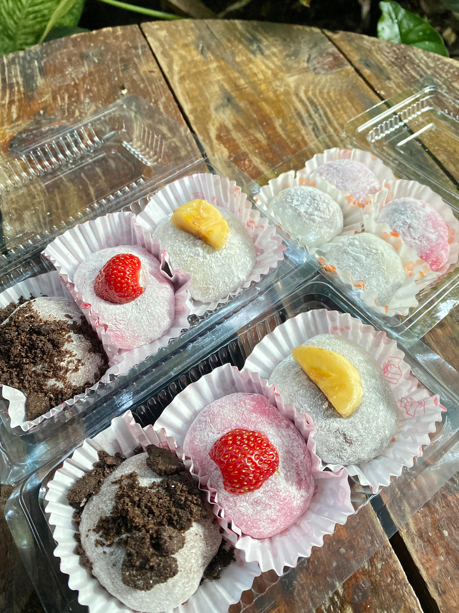

Tentang Kami
Mochi adalah kue tradisional Jepang yang terbuat dari beras ketan yang ditumbuk hingga menjadi adonan lengket dan kenyal. Teksturnya yang lembut dan elastis membuatnya unik dan disukai banyak orang. Mochi sering diisi dengan berbagai macam bahan, seperti pasta kacang merah, es krim, atau buah-buahan, sehingga menciptakan variasi rasa yang beragam.
Visi Kami
Menjadi pemimpin dalam industri mochi dengan mengutamakan kualitas, rasa dan inovasi.
Misi Kami
Menyediakan mochi terbaik dengan layanan pelanggan yang unggul.